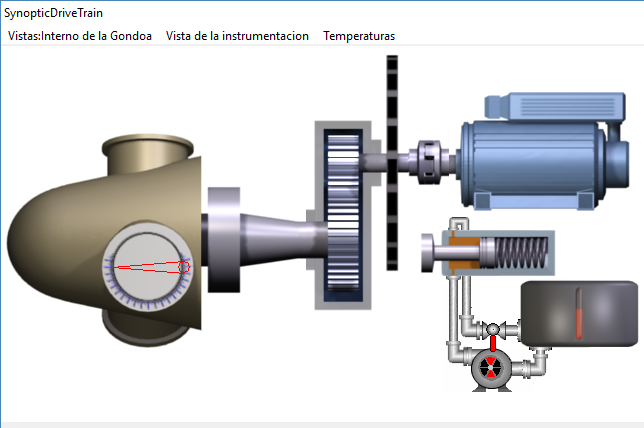
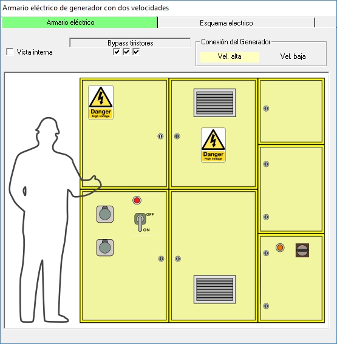
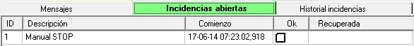
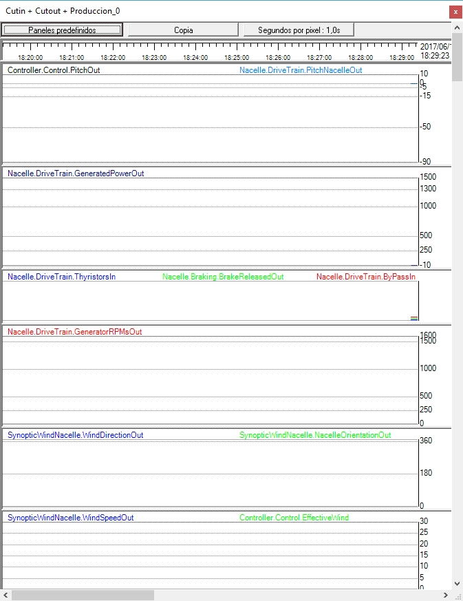

El objetivo de esta práctica es familiar al alumno
• con los distintos sinópticos disponibles.
•con la creación de las condiciones necesarias para que el aerogenerador de parado a produccción.
1.Asegúrese que se está ejecutando la simulación: en el sinóptico "Ejecutando Simulador ..."`pulse "Ejecutar".
2.Observe que el angulo de Pitch pasa a -90º . Puede comprobarlo en el sinóptico del Tren de Potencia



3.Compruebe en el sinóptico "Armario eléctrico ..." que el "Interruptor principal" está conectado. Ver la figura siguiente:


4.En el sinóptico "Control Terminal" compruebe que la pestaña "Incidencias abiertas" no hay incidencias que deban ser reconocidas (excepto "Manual STOP").
Por ejemplo, si ha 'ejecutado' la simulación y no estaba conectado el "Interruptor principal", el Controlador detectará la falta de suministro eléctrico principal y reportará unas incidencias como las que se muestran en la siguiente figura, anotando la fecha en que se detectaron (año-mes-día hora:minuto:segundo,milisegundo):
Si cambia el "Interruptor principal" a 'On', en cuyo momento, el Controlador detectará que las condiciones que produjeron las incidencias han desaparecido, y anotará el instante en que se produce en la columna titulada "Recuperada". Ver siguiente figura.
Este tipo de incidencias requieren ser 'reconocidas' por el operador: para ello debe marcar (con el ratón) en la casilla de la columna "Ok" de cada una de ellas (primeros dos items en la figura anterior). Cuando lo haga verá que desaparecen del listado en 'Incidencias pendientes' y pasarán, automáticamente, al listado de la pestaña "Historial incidencias", tal como se muestra en la figura siguiente:
Este listado recoge el registro que mantiene el propio Controlador de las incidencias que se han ido produciendo. En otras clases prácticas verá que existen incidencias que no necesitan ser 'reconocidas' por el operador: es decir, el Controlador proseguirá la ejecución del 'protocolo' previsto cuando las condiciones de la incidencia hayan desaparecido, sin exigir que el operador se de por enterado de la misma.
5.En esta situación, el listado en 'Incidencias abiertas' debe mostrar solo "Manual STOP", como en la figura siguiente:


6.Cerciórese de que tiene visible un "Registrador" donde se presente el "Panel predifinido" con nombre "Cutin + Cutout + Produccion", tal como se muestra en la siguiente figura. Ver Como presentar un Registrador y elegir un Panel predefinido en él.

7.Cambie la velocidad del viento a 6.0 m/s. Este es un valor bajo de viento: el aerogenerador que se simula genera una potencia nominal de 1.300 KW a un viento nominal de alrededor de 12 m/s. Un viento de 6 m/s está por debajo del viento "Max. para Generador Grande" (Ver Valores funcionales de viento ), con lo que sabemos se utilizará la conexión de 6 polos del Generador (Generador pequeño).
Para hacerlo, localice el sinóptico "SynopticWindNacelle" (Ver Como presentar en primer plano un determinado sinóptico)
En este sinóptico sitúe el ratón sobre el indicador de viento (parte de fondo blanco). Ver siguiente figura.
Puede cambiar el viento de dos formas:
1.Tecleando directamente el valor deseado.
Note que cuando cambia el valor, el fondo cambia a amarillo hasta que pulsa la tecla "Intro" en el teclado. Si quiere abortar el cambio, antes de pulsar "Intro", puede pulsar la tecla "ESC" (parte superior izquierda del teclado).
2.Utilizando las teclas de "Avance de Pagina", "Retroceso de Pagina", "Flecha hacia arriba" y "Flecha hacia abajo".
Este método es el preferido y permite cambiar el valor en saltos de 1 m/s (Avance / Retroceso de Pagina) o en saltos de 0.1 m/s (Flechas).
Este es el método preferido porque limita la velocidad de cambio del viento a valores razonables, mientras que en el método 1, estos cambios pueden ser muy bruscos.
8.Puede aprovechar para cambiar la dirección del viento, utilizando el mismo procedimiento sobre el indicador "Direccion viento".
9.Pulse el botón "START" y observe la evolución de las siguientes señales en el registrador y en los diferentes sinópticos.
1.Velocidad de giro de las palas: en SynopticDriveTrain, Control Terminal y Registrador.
2.Velocidad de giro del eje del Generador: en Control Terminal y Registrador.
3.Orientación de la Góndola: en SynopticWindNacelle y Registrador.
4.Presión del circuito hidráulico, funcionamiento de la bomba y liberación de frenos: en SynopticDriveTrain y Registrador
5.El angulo de Pitch: en SynopticDriveTrain (tanto en la 'Vista interna' como en 'Vista 3D' ), en Control Terminal, en SynopticWindNacelle y Registrador.
6.Velocidad del viento: en SynopticWindNacelle, en Control Terminal y Registrador.
7.El estado del Contactor de Bypass de Tiristores (conexión a la Red): en Armario Eléctrico (vista interior), en Control Terminal y Registrador.
10.Obtendrá una evolución de señales en el registrador similar a la que se presenta en la siguiente figura:
11.Puede comprobar que, al cabo de cierto tiempo (unos segundos) después de pulsar START, el Controlador acciona los motores de orientación ("Giro Izq" y "Giro derech") hasta que la orientación de la Góndola coincide 'apreciablemente' con la dirección indicada del viento, pero no exactamente. Esto es debido a que el Controlador asume que existe una cierta incertidumbre en la medida de la dirección del viento, y que, por otra parte, mover la Góndola 'requiere' energía y por tanto tiene un coste. El resultado es que si el error entre la dirección del viento 'medida' y la orientación de la Góndola está dentro de un determinado margen, 'decide' que está orientada.
El valor de este margen en el simulador está exagerado con fines didácticos.
Así mismo no es realista la velocidad de giro de la Góndola en el simulador, aunque este es un valor que se puede cambiar, incluso durante la ejecución de la simulación, utilizando los parámetros NacelleYawing.CWYawingSpeed y NacelleYawing.CCWYawingSpeed. El valor por defecto es de 10 grados/segundo, mientras que en la realidad este valor está alrededor de 0,5 grados/segundo.
12.El concepto de "Velocidad Eficaz del Viento".
Este valor corresponde con el valor del viento que es frontal al plano de giro de las palas, es decir el viento que efectivamente sirve para hacer girar las palas.
Si el aerogenerador no está orientado, este valor corresponde al producto de la velocidad real del viento multiplicado por el coseno del angulo de desorientación. Corresponde con el vector rojo en la siguiente figura.
Este valor eficaz se presenta en el indicador "VeloEficVien" del sinóptico "Control Terminal". Cuando la Góndola está orientada, este valor coincide con el valor de velocidad del viento. Esto se puede comprobar en la evolución de ambos valores en la figura del registrador, en el ultimo canal, en donde se ve que convergen en el mismo valor cuando la Góndola está orientada.
13.Análisis funcional de la secuencia de eventos durante la operación de conexión a Red (cutin):
1.Si la Góndola no está orientada al viento, inicia la operación de orientación. Puede que necesite realizar previamente una operación de desenrolle de cables de potencia.
2.El Controlador, a partir de la medición del valor del viento, decide que el generador , que tiene dos posibles conexiones (correspondientes a arrollamientos del estator a 4 o 6 polos magnéticos, "Gen. Grande" y "Gen. Pequeño" respectivamente) , va a ser conectado con 6 polos ("Gen. Pequeño"). En este caso la velocidad de sincronismo es de 1.000 rpms.
3.El Controlador, antes de iniciar la operación propiamente dicha, decide comprobar la situación del mecanismo de frenos (estado de la zapata, muelle, etc.). Para ello activa el freno, a la vez que coloca el Pitch de las palas en un valor en el que sabe que el viento produce un valor de par mecánico en las palas suficiente para esta comprobación.
4.Si todo va bien procede a liberar los frenos: para ello cierra la válvula del circuito hidráulico y pone en marcha la bomba.
5.El tren de potencia comienza a acelerarse.
6.El Controlador monitoriza el valor de la aceleración del tren de potencia, y actúa sobre el Pitch (que es la fuente de aceleración) de forma que este valor se mantenga por debajo de un determinado nivel.
7.Cuando la velocidad del generador se acerca a la velocidad de sincronismo, el Controlador activa los Tiristores. El angulo de conducción de los Tiristores sigue un patrón de comenzar con poco angulo de conducción hasta conducción total al cabo de unos pocos segundos (de 2 a 4 segundos típicamente).
Ver la animación en Soft starter (conexion suave) a la Red .
8.Cuando se llega a la conducción total de los Tiristores, el Controlador activa los Contactores de Bypass de Tiristores, que los cortocircuita: en esa situación no hay paso de corriente por los Tiristores y se desactivan. El aerogenerador está en Producción.